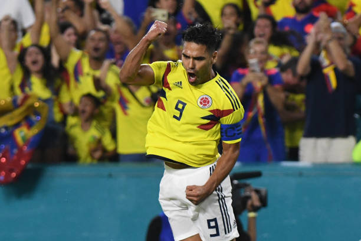

Radamel Falcao García Zárate is a Colombian professional footballer who plays as a forward for La Liga club Rayo Vallecano and captains the Colombia national team. He is nicknamed "El Tigre". During his prime, he was regarded as one of the best strikers in the world.
Born: 10 February 1986 (age 35 years), Santa Marta, Colombia
Height: 1.77 m
Nationality: Colombian
Spouse: Lorelei Taron (m. 2007)
Current teams: Rayo Vallecano (#3 / Forward), Colombia national football team (Forward)
Children: Annette García Tarón, Jedidiah Falcao García Tarón, Dominique García Taron, Desirée García Taron
Nicknames: El Tigre, King of the Europa League